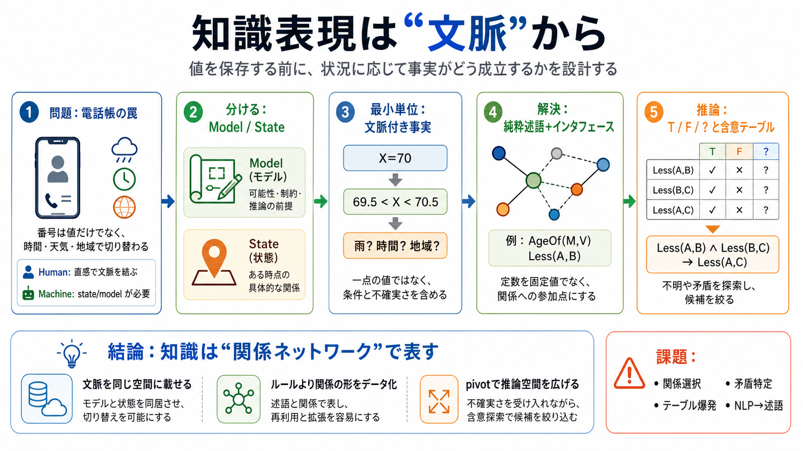

Human
自然言語の状況を直感的に結び付け、適切な番号を思い出せる。

「文章を解釈する」前に、「状況に応じて事実がどう成立するか」を設計する必要がある、という思想。
電話番号は「値そのもの」でも「一文の意味」でもなく、8月／6〜9pm／雨でない／国外からのような条件で切り替わる。
知識は大きく model（モデル） と state（状態） に分けると整理できる。
状態を扱うには、「X=70」ではなく「約69.5<X<約70.5」のような不確実さを含めて表す必要がある。
変数に値を入れる発想では「X<10」のような命題を、そのまま“事実”として格納しにくい。
解決の方向性は「純粋な述語」への移行。状態（真・偽・不明）を関係として自然に扱える。
定数（mary, john）を関係に直固定すると、職務・会社・時点が変わるたびに文脈の追加が難しくなる。
関係の状態は三値（True/False/Unknown）で管理する。推論は関係同士の含意をテーブルで扱える。
不明（?）があると、真にも偽にも確定しきれない候補が残る。矛盾が出れば「不整合」か「テーブル不足」と見なして探索を進める。
メタテーブル的な構造と「焦点の切り替え（pivot）」で、推論できる範囲を広げる発想が出てくる。
“ルールをコードで書く”よりも、“関係の関係”をデータ構造として持ち、テーブル伝播で推論を整理する。
自然言語理解の話というより、機械が世界について考えるための枠組み（state/model、三値、含意テーブル、pivot）の問題だという全体像。
No references found